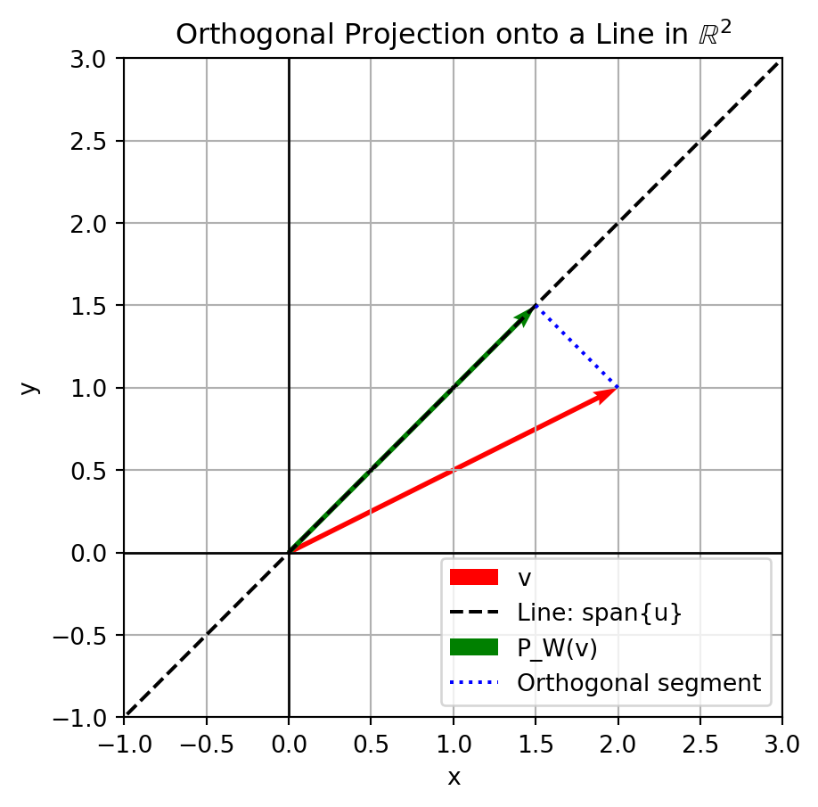

Show the code
import numpy as np
v = np.array([2, 1])
u = (1/np.sqrt(2)) * np.array([1, 1])
proj_v_on_u = (v @ u) * u
proj_v_on_uarray([1.5, 1.5])Definition (Orthogonal Projection):
An orthogonal projection onto a subspace W of an inner product space V is a linear transformation P: V \to V such that:
In more intuitive terms, given a subspace W \subseteq V, the orthogonal projection of a vector v \in V onto W is the “closest point” in W to v. Formally, if w \in W is chosen such that v - w is orthogonal to every vector in W, then P(v) = w.
Notation:
If W is spanned by an orthonormal set \{u_1, u_2, \ldots, u_k\}, the orthogonal projection of any v \in V onto W is given by:
P_W(v) = \sum_{i=1}^{k} \langle v, u_i \rangle u_i.
For vectors u, v \in V, the projection of u onto v is given by: P_v(u) = \frac{\langle u, v \rangle}{\|v\|^2} v, \quad \text{provided } v \neq 0.
Example (Orthogonal Projection onto a Line):
If W = \text{span}\{u\} with u normalized (i.e. \|u\|=1), then for any v \in V:
P_W(v) = \langle v, u \rangle u.
This formula is a special case of the more general formula for projecting onto a single vector.
Statement:
A linear operator P: V \to V is an orthogonal projection onto some subspace W \subseteq V if and only if P is idempotent (P^2 = P) and self-adjoint (P = P^*).
Proof Outline:
1. (Necessity) If P is an orthogonal projection onto W, by definition P_W^2 = P_W and P_W is its own adjoint.
2. (Sufficiency) If P is idempotent and self-adjoint, let W = \text{Im}(P). For any v, P(v) \in W and v - P(v) is orthogonal to W. Thus, P is the orthogonal projection onto W.
Statement:
For any subspace W \subseteq V, each y \in V can be uniquely written as:
y = \hat{y} + z,
where \hat{y} \in W and z \in W^\perp. If \{u_1, \ldots, u_p\} is an orthogonal basis for W, then:
\hat{y} = \frac{\langle y, u_1 \rangle}{\langle u_1, u_1 \rangle} u_1 + \cdots + \frac{\langle y, u_p \rangle}{\langle u_p, u_p \rangle} u_p, \quad z = y - \hat{y}.
If \{e_1, \ldots, e_m\} is an orthonormal basis for W, then: P_W(y) = \langle y, e_1 \rangle e_1 + \cdots + \langle y, e_m \rangle e_m.
Statement:
For a subspace U \subseteq V and v \in V:
\|v - P_U(v)\| \leq \|v - u\| \quad \text{for all } u \in U.
Equality holds if and only if u = P_U(v). This underscores the idea that P_U(v) is the “closest” vector in U to v.
Statement:
If \{u_1, \ldots, u_p\} is an orthonormal basis for a subspace W \subseteq \mathbb{R}^n, and U = [u_1 \cdots u_p], then for all y \in \mathbb{R}^n:
P_W(y) = U U^T y.
This coincides with the matrix representation previously discussed.
Statement:
If U = [u_1 \ u_2 \ \cdots \ u_k] is a matrix whose columns form an orthonormal basis for W \subseteq \mathbb{R}^n, then the orthogonal projection onto W is given by:
P_W = U U^T.
Explanation:
Since each u_i is orthonormal, U^T U = I_k. Then P_W acts on a vector v as:
P_W(v) = U (U^T v) = \sum_{i=1}^{k} \langle v, u_i \rangle u_i.
Proof Sketch:
- Idempotent: (U U^T)(U U^T) = U (U^T U) U^T = U I_k U^T = U U^T. - Symmetric: (U U^T)^T = U U^T.
Thus, P_W represents an orthogonal projection.
Set-up:
Let V = \mathbb{R}^2 and consider W = \text{span}\{u\} where u = \frac{1}{\sqrt{2}}\begin{bmatrix} 1 \\ 1 \end{bmatrix}. For v = \begin{bmatrix} 2 \\ 1 \end{bmatrix}, find P_W(v).
Solution Steps: 1. Since u is normalized, P_W(v) = \langle v, u \rangle u. 2. Compute \langle v, u \rangle = [2 \ 1]\begin{bmatrix} 1/\sqrt{2} \\ 1/\sqrt{2} \end{bmatrix} = \frac{3}{\sqrt{2}}. 3. Therefore: P_W(v) = \frac{3}{\sqrt{2}} \cdot \frac{1}{\sqrt{2}}\begin{bmatrix} 1 \\ 1 \end{bmatrix} = \frac{3}{2}\begin{bmatrix} 1 \\ 1 \end{bmatrix} = \begin{bmatrix} 1.5 \\ 1.5 \end{bmatrix}.
Python Computation:
Set-up:
Let W = \text{span}\{u_1, u_2\} in \mathbb{R}^3 where:
u_1 = \frac{1}{\sqrt{5}}\begin{bmatrix} 1 \\ 2 \\ 0 \end{bmatrix}, \quad
u_2 = \frac{1}{\sqrt{2}}\begin{bmatrix} 0 \\ 1 \\ 1 \end{bmatrix}.
For v = \begin{bmatrix} 3 \\ 3 \\ 1 \end{bmatrix}, find P_W(v).
Solution Steps: 1. Compute \langle v, u_1 \rangle and \langle v, u_2 \rangle. 2. Then: P_W(v) = \langle v, u_1 \rangle u_1 + \langle v, u_2 \rangle u_2.
Python Computation:
Consider the \mathbb{R}^2 example (Example 1). We can visualize the vector v, the line spanned by u, and the projection P_W(v).
Visualization Steps: - Draw the vector v - Draw the subspace W (a line) - Draw P_W(v) as the “foot” of the perpendicular from v onto W
Python Visualization:
import matplotlib.pyplot as plt
v = np.array([2, 1])
u = (1/np.sqrt(2))*np.array([1, 1])
proj_v_on_u = (v @ u)*u
fig, ax = plt.subplots(figsize=(5,5))
ax.set_aspect('equal', 'box')
ax.axhline(0, color='black', linewidth=1)
ax.axvline(0, color='black', linewidth=1)
# Plot vector v
ax.quiver(0, 0, v[0], v[1], angles='xy', scale_units='xy', scale=1, color='r', label='v')
# Plot line spanned by u
line_x = np.linspace(-2, 3, 100)
line_y = line_x
ax.plot(line_x, line_y, 'k--', label='Line: span{u}')
# Plot projection
ax.quiver(0, 0, proj_v_on_u[0], proj_v_on_u[1], angles='xy', scale_units='xy', scale=1, color='g', label='P_W(v)')
# Draw a line from v to its projection
ax.plot([v[0], proj_v_on_u[0]], [v[1], proj_v_on_u[1]], 'b:', label='Orthogonal segment')
ax.set_xlim(-1, 3)
ax.set_ylim(-1, 3)
ax.set_xlabel('x')
ax.set_ylabel('y')
ax.legend()
plt.title('Orthogonal Projection onto a Line in $\mathbb{R}^2$')
plt.grid(True)
plt.show()<>:31: SyntaxWarning:
invalid escape sequence '\m'
<>:31: SyntaxWarning:
invalid escape sequence '\m'
/var/folders/k3/0tfj566s6595h65vnk0sk3_w0000gn/T/ipykernel_10195/142818645.py:31: SyntaxWarning:
invalid escape sequence '\m'

Projection onto a One-Dimensional Subspace: Given W = \text{span}\{w\} in \mathbb{R}^2 with w = \begin{bmatrix}2 \\ 2\end{bmatrix}, find the orthogonal projection P_W(v) for v = \begin{bmatrix}3 \\ 1\end{bmatrix}.
Matrix Representation: Let u_1 = \frac{1}{\sqrt{5}}\begin{bmatrix}1 \\ 2\end{bmatrix} be an orthonormal basis for W \subseteq \mathbb{R}^2. Write the matrix form of P_W and apply it to v = \begin{bmatrix}4 \\ 0\end{bmatrix}.
Projection onto a Plane in \mathbb{R}^3: Consider W = \text{span}\{u_1, u_2\} with u_1 = \frac{1}{\sqrt{2}}\begin{bmatrix}1 \\ 1 \\ 0\end{bmatrix}, \quad u_2 = \frac{1}{\sqrt{2}}\begin{bmatrix}0 \\ 1 \\ 1\end{bmatrix}. Find P_W(v) for v = \begin{bmatrix}1 \\ 2 \\ 3\end{bmatrix}.
Uniqueness of Orthogonal Projection: Prove that an orthogonal projection P_W is uniquely defined by the subspace W and does not depend on the particular orthonormal basis chosen for W.
Idempotent and Self-Adjoint Condition: Show that if a linear operator P on an inner product space V satisfies P^2 = P and P = P^*, then it must be an orthogonal projection onto its image.
Solution to Problem 1:
Python Check:
array([2., 2.])Solution to Problem 2 (Sketch):
Solution to Problem 3 (Sketch):
Solution to Problem 4:
Solution to Problem 5: